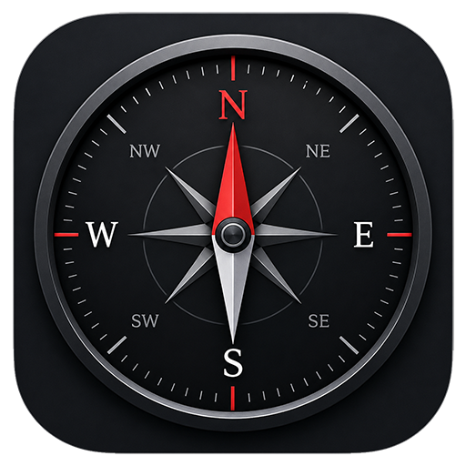
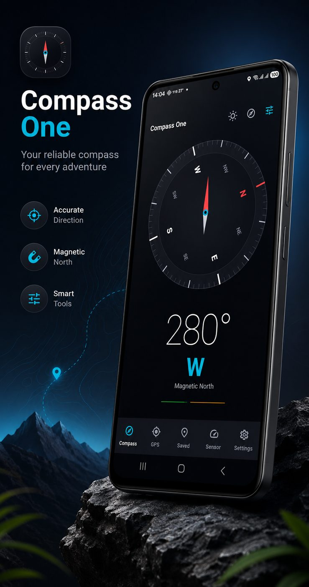
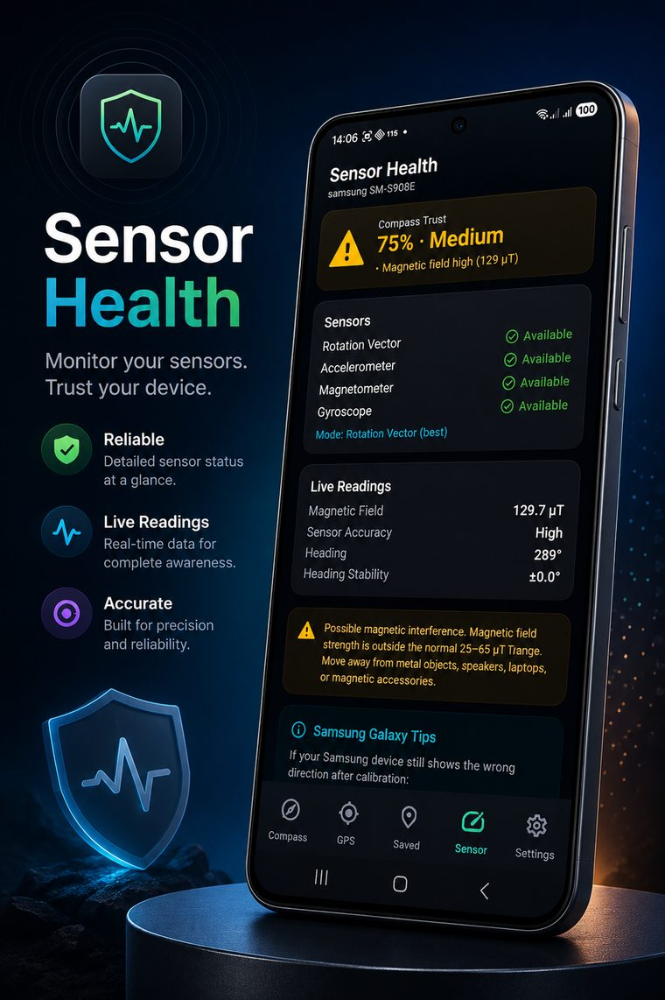
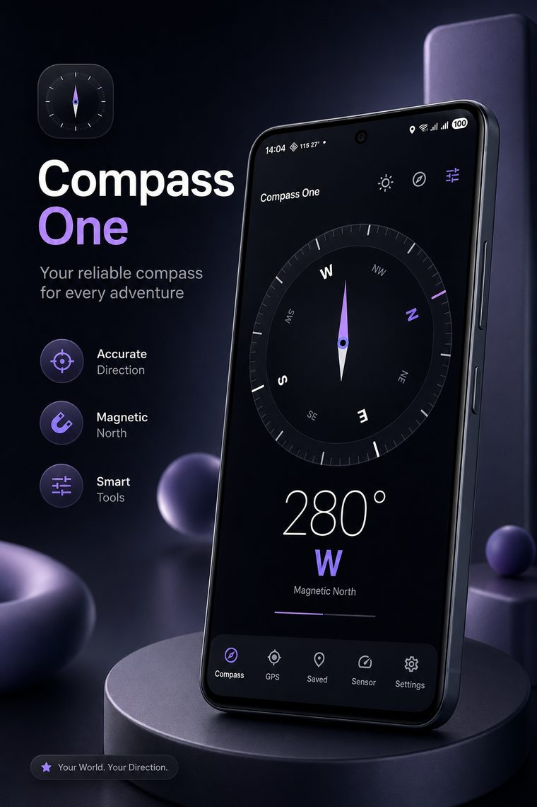
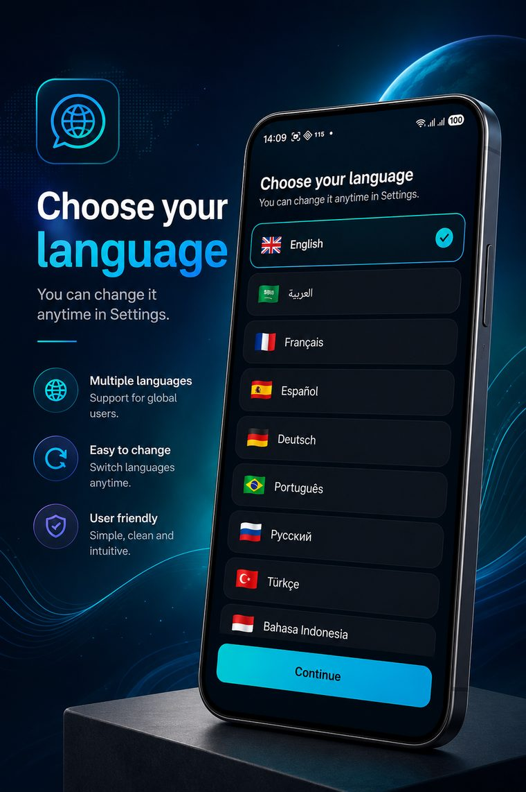

Direction to the Kaaba
Great-circle bearing from wherever you are, with a marker on the dial and a pulse when you line up.

Compass OneEvery compass app points somewhere. Compass One reads your phone's magnetometer, accelerometer and gyroscope, and scores how much that direction can be trusted — live, from 0 to 100.
Free · Works offline · No account
DRAG THE DIAL
A phone compass fails quietly. Hold it near a laptop, a car door or a magnetic case and the needle still points confidently — at the wrong thing.
Compass One watches for that. It combines sensor accuracy, magnetic field strength and how much the heading is drifting into one number, and says in plain words what is pulling it off.
Field 48 µT, steady heading. Trust it.
Magnetic field elevated — something nearby is interfering.
Sensor accuracy unreliable. Calibrate before you rely on this.
Great-circle bearing from wherever you are, with a marker on the dial and a pulse when you line up.
Applies the magnetic declination for your location, so maps and the needle finally agree.
Latitude, longitude, altitude, speed and accuracy. Save places with notes, sort them by distance.
Which sensors your phone actually has, what they are reading now, and Samsung-specific fixes when they misbehave.
Live accuracy while you move — and it says so when interference, not calibration, is the real problem.
Sun and moon positions on the dial, with sunrise and sunset for your coordinates.




The compass runs entirely on your phone's sensors. There is no account to make and nothing to sign in to.
Location is optional — the app does not ask on first launch, and the compass works without it. When you do grant it, it stays on the device. Saved places live in local storage and leave when you uninstall.